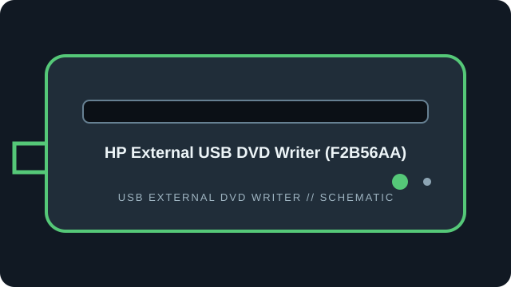

[ EXTERNAL DVD WRITERS // IDENTIFIED MODEL ]
HP External USB DVD Writer (F2B56AA)
HP external USB DVD-RW drive identified by accessory SKU F2B56AA and its corresponding HP model record. The full part number matters for matching documentation.

IDENTIFICATION: Match the full model/suffix and any bundled part number against the unit label and cited manual. Rated maximums depend on media, firmware, and operating mode; read support is not write support.
Documented specifications
| Catalog subcategory | External DVD writers |
|---|---|
| Exact model | HP External USB DVD Writer (F2B56AA) |
| Read media formats | CD-ROM, CD-R/RW; DVD-ROM, DVD±R/RW, DVD±R DL and DVD-RAM. |
| Rated read speeds | DVD-ROM/recordable DVD up to 8×; DVD-RAM up to 5×; CD-ROM/CD-R/RW up to 24×. |
| Write media formats | CD-R/RW; DVD±R, DVD±RW, DVD±R DL and DVD-RAM. |
| Rated write speeds | DVD±R up to 8×; DVD+RW up to 8×; DVD-RW up to 6×; DVD±R DL up to 6×; DVD-RAM up to 5×; CD-R/RW up to 24×. |
| USB interface | External, bus-powered USB 2.0; backward/forward port compatibility does not increase the drive’s USB 2.0 link rate. |
| OS / firmware compatibility | HP’s model support and QuickSpecs identify Windows host compatibility; bundled CyberLink software has its own supported-OS limits. Current macOS support is not guaranteed by HP’s cited model materials. No model firmware revision is listed; use the HP F2B56AA/5383387 support entry only. |
| Model distinction | F2B56AA is the HP accessory SKU; the HP support page identifies its associated device model. Match both where present. |
Use, compatibility & preservation
- External, bus-powered USB 2.0; backward/forward port compatibility does not increase the drive’s USB 2.0 link rate.
- HP’s model support and QuickSpecs identify Windows host compatibility; bundled CyberLink software has its own supported-OS limits. Current macOS support is not guaranteed by HP’s cited model materials. No model firmware revision is listed; use the HP F2B56AA/5383387 support entry only.
- F2B56AA is the HP accessory SKU; the HP support page identifies its associated device model. Match both where present.
- Record drive model and reported firmware, host OS, USB controller, application version, disc format, media brand and any read or verification errors when imaging.
- Keep checksummed image copies and logs; store discs in cases away from heat, moisture and direct sunlight. Avoid adhesive labels, abrasives and undocumented solvents.
Firmware support is model-specific: do not cross-flash a related product family or infer an update from an adjacent suffix.
Sources
- HP External USB DVD Writer F2B56AA — product supportHP model-specific support page and downloads.
- HP External USB DVD Writer — QuickSpecsHP product QuickSpecs for the external DVD writer accessory; use with the exact F2B56AA label.